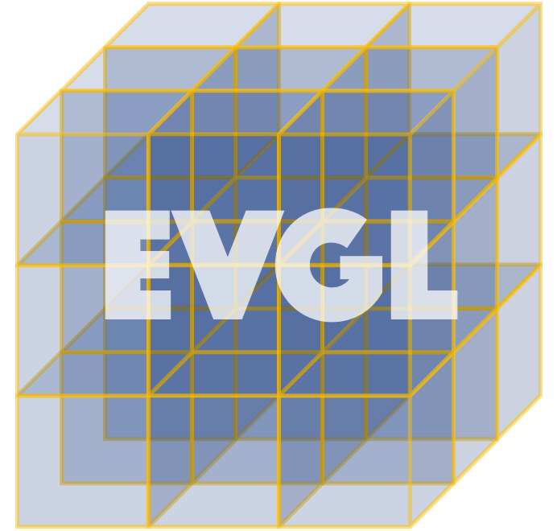

Jan
2026
Our paper "Feed-forward Human Performance Capture via Progressive Canonical Space Updates" has been accepted to ICLR 2026!
Department of Computer Science · Emory University

Modeling Beyond Visual Boundaries
Our paper "Feed-forward Human Performance Capture via Progressive Canonical Space Updates" has been accepted to ICLR 2026!
Dr. Youngjoong Kwon joined Emory University CS as an assistant professor. Welcome to Emory!
PhD Student
Undergraduate Intern
Reconstructing detailed 3D human models from sparse camera setups with high fidelity and real-time performance.
Creating photorealistic digital humans from minimal input — a single image to a fully rigged, animatable avatar.
Combining neural networks with rendering techniques for photorealistic image and scene synthesis.
Enabling immersive remote presence through real-time 3D capture for accessible, life-sized virtual collaboration.
Building large-scale models for understanding and generating 3D worlds grounded in physical reality.
Generating new viewpoints of scenes from limited observations, generalizing across identities and environments.
Goodrich C. White Hall 215
Emory University
301 Dowman Dr, Atlanta, GA 30322
By appointment
Prospective PhD candidates should include a brief statement of research interests and a CV in their email.